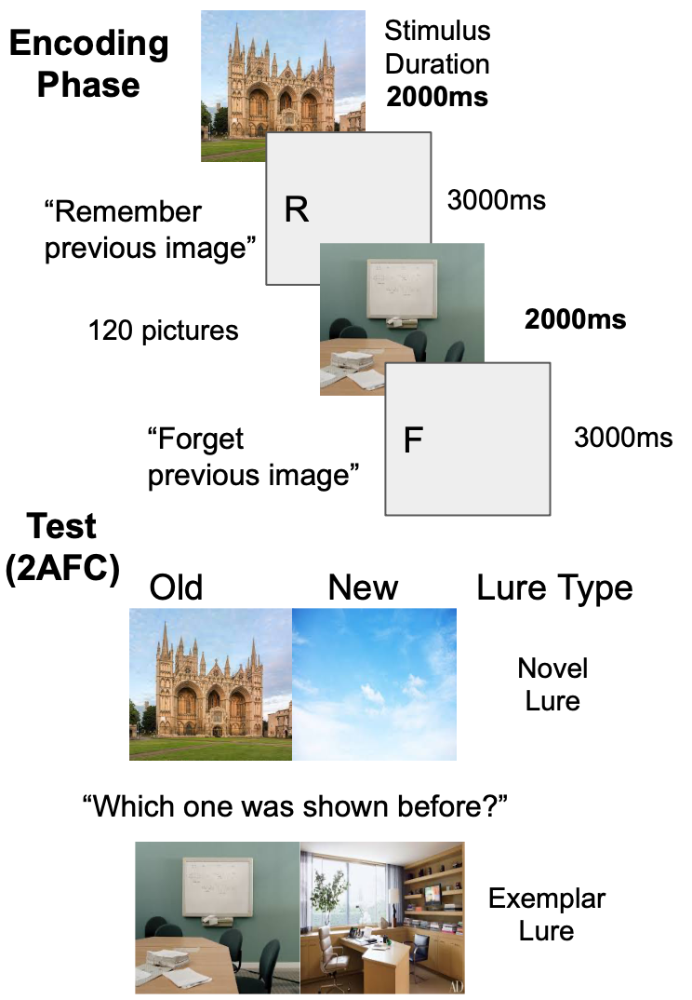
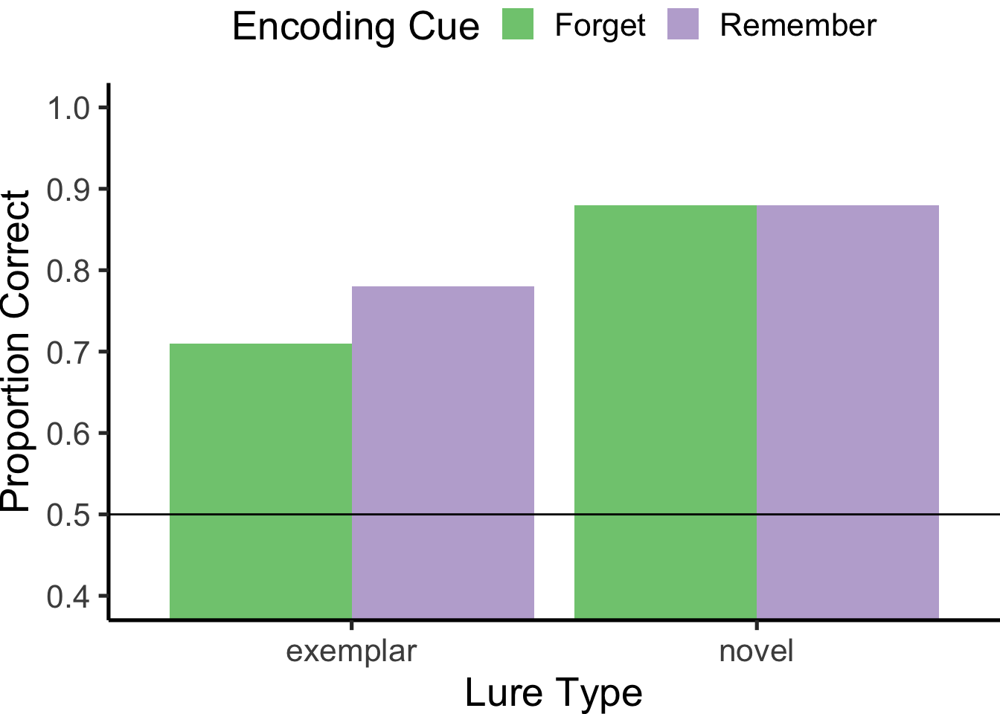
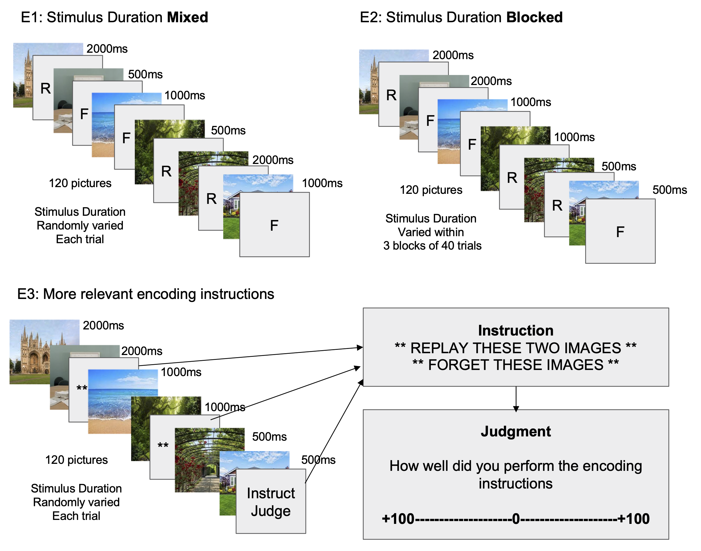
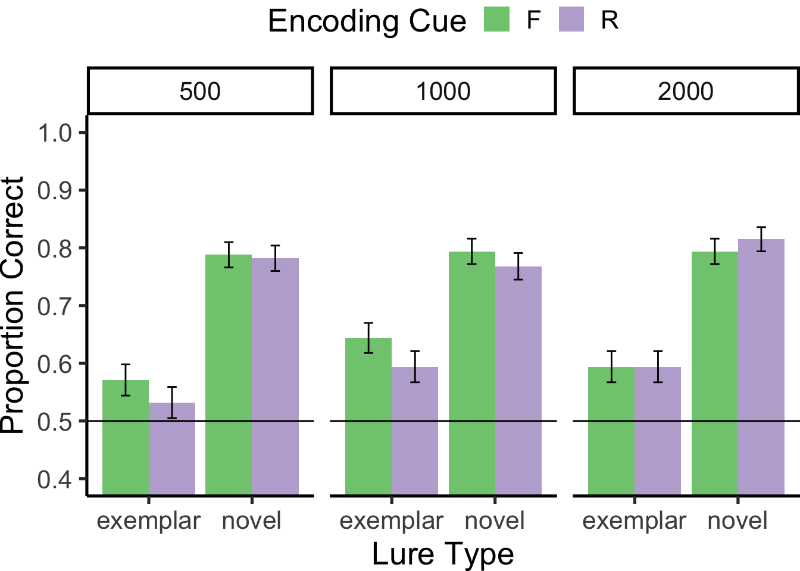
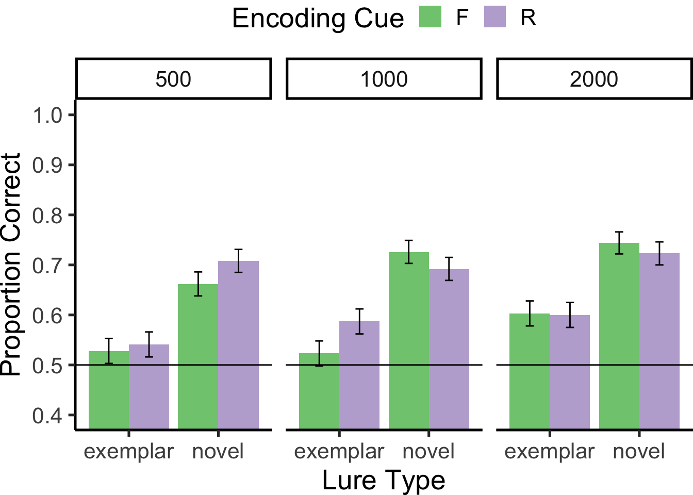
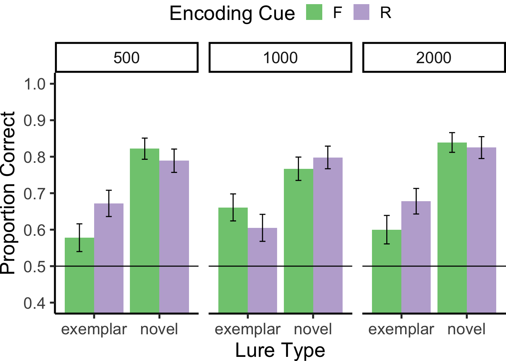

Try to Forget This Image:
The Role of Stimulus Duration in Directed Forgetting for Natural Scenes.
Drew Shives1, Patrick Ihejirika1, Wesley Huang1, Matthew J. C. Crump1, 
1 Brooklyn College, CUNY
2 The Graduate Center, CUNY

What is Directed Forgetting?
Directed forgetting research investigates people’s ability to intentionally forget information (MacLeod, 1998). For example, in a memory task for words participants are instructed to remember some words and forget others for a later memory test. A directed forgetting effect is observed when people show worse memory for the words they attempted to forget. Directed forgetting tasks often use word stimuli, and the limitations of intentional forgetting for other kinds of information remain unclear.
Can people intentionally forget memorable picture information?
The picture-superiority effect suggests that pictures are inherently more memorable than words (Gehring et al., 1976), and people have a large capacity for remembering pictures (Standing, 1973).
Ahmad et al. (2019) showed small directed forgetting effects for pictures.
Prior work: Limited Directed Forgetting for Pictures

Prior Results
Reproduction of the results from Ahmad et al. (2019).

They found a small directed forgetting effect.
The effect was only observed for items given a more difficult recognition test, involving a similar (exemplar) lure.
Are pictures easier to forget if they are made less memorable?
Hypothesis
We assume the magnitude of directed forgetting is influenced by stimulus encoding strength
Strongly encoded stimuli are harder to forget
Weakly encoded stimuli are easier to forget
We assume decreasing stimulus duration will make pictures less well encoded, and easier to forget
We predict increased directed forgetting as stimulus duration decreases.
Predicted effect of stimulus duration manipulation

Methods: 3 close replications of Ahmad et al. (2019) with stimulus duration manipulation to reduce picture memorability
Stimulus duration was 2, 1, or .5 seconds.
Online experiments using JsPsych (De Leeuw, 2015)

Results: Inconsistent directed forgetting effects
E1 Mixed (N=47 MTURK)

E2 Blocked (N=45 CUNY)

E3 (N=17 ongoing)

Conclusions and Next Steps
No consistent directed forgetting effects
Our power analysis suggests we need many more subjects to detect interactions with stimulus duration
We are tuning the task instructions for web-browser interactions to encourage participants to engage with instructional cues.
Project website
Click the QR code, or go here:
https://crumplab.com/picture-duration-directed-forgetting/
This poster was prepared as a computationally reproducible project using a vertical (Vuorre & Crump, 2021) approach, and several other libraries from the open-source community.
This website contains the source code for this poster, and the most up-to-date analyses and project assets.